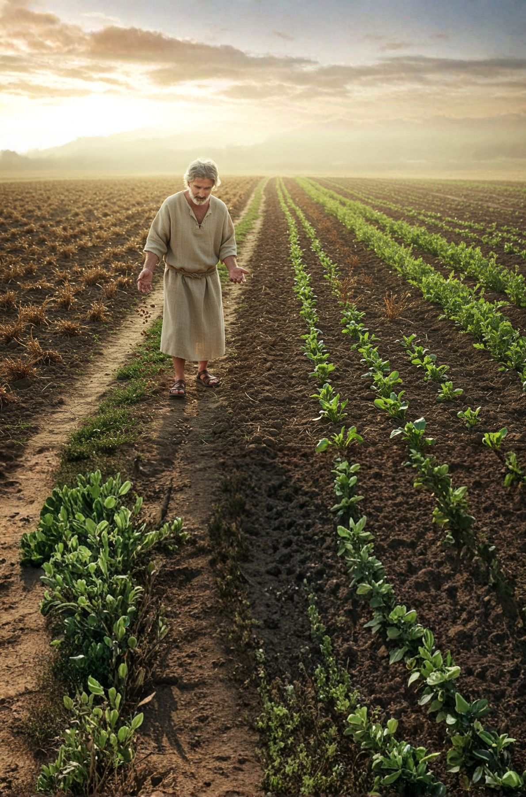
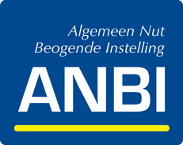

Zaad voor de Zaaier
Zaad verschaffen aan zaaiers, zodat er gezaaid kan worden.
Hij nu Die zaad verschaft aan de zaaier en brood tot voedsel, zal ook uw zaad vermeerderen en de vruchten van uw gerechtigheid doen toenemen.
2 Kor. 9:10
Wat is het?


Zaad voor de Zaaier is een project van de ondernemers Maarten Vroegindeweij en Stefan de Heer, ondergebracht in Stichting Werkers in de Wijngaard (ANBI). Jaarlijks volgen tientallen mensen de bijbelscholen Philadelphia en Gospel Image van Stichting Hebron Missie. Velen van hen willen daarna als ‘werker’ de wijngaard van de Heer in: evangelisatie op straat, voor scholen en in allerhande acties in Nederland. Zonder ondersteuning is dat financieel niet haalbaar. Met giften, als zaad, kunnen zij aan de slag.
Waarom? Ondernemers zijn druk met werk, kerk en gezin en komen tijd tekort om zelf licht te verspreiden. Anderen hebben die tijd wel, maar niet de middelen. Zo zijn we, als handen, voeten en oren, samen één lichaam. vgl. Rom. 12:4–5
Hoe werkt het?
- Stichting Hebron Missie leidt op en rust toe in de bijbelscholen en selecteert wie uitgezonden kan én wil worden. hebronmissie.nl
- Stichting Werkers in de Wijngaard (ANBI) ondersteunt evangelisatieprojecten; Zaad voor de Zaaier is er één van. werkersindewijngaard.nl
- Uw gift wordt de financiële ondersteuning van een werker tijdens de bediening.
Twee bedieningspaden
- Parttime: 3 dagen per week in de wijngaard en 2 dagen in de maatschappij, zoals Paulus, de tentenmaker.
- Fulltime: 5 dagen per week in de wijngaard, zoals de apostelen die hun netten verlieten.
Beide paden: evangelisatie op straat, evangelisatie-acties en een dag scholing en voorbereiding per week.
Meedoen
- Ten name van
- Stichting Werkers in de Wijngaard
- IBAN
- NL83 RABO 0310 5957 62
- Onder vermelding van
- Project Zaad voor de Zaaier
- Minimaal bedrag
- € 100,-
Er blijft geen eurocent aan de strijkstok hangen: uw gift wordt 100% ingezet voor het beschreven doel. Er is geen vast budget; hoe meer zaad, hoe meer Gods Woord verspreid wordt.
Fiscaal
- Giften aan de ANBI-stichting kunnen binnen de wettelijke kaders aftrekbaar zijn: van de winst (eenmanszaak, vof) of in de vennootschapsbelasting (bv).
- Een periodieke gift (minimaal 5 jaar, schriftelijk vastgelegd, geen notaris nodig) is volledig aftrekbaar, zonder drempel of maximum.
- Wij geven geen fiscaal advies; raadpleeg uw boekhouder of accountant.
Geef uit uw hart en niet uit verplichting: God heeft een blijmoedige gever lief.
2 Kor. 9:7 Wij benaderen u hierover verder niet.
